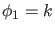
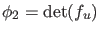
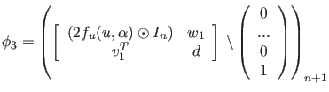
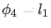
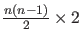
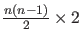

In continuous-time systems there are four generic codim 2 bifurcations that can be detected along a Hopf curve:
- Bogdanov - Takens. We will denote this bifurcation by BT
- Zero - Hopf point, denoted by ZH
- Double - Hopf point, denoted by HH
- Generalized Hopf point, denoted by GH
To detect these singularities, we first define 4 test functions:
- 
-

-

-  (first Lyapunov coefficient, see (40)),
where  ,
,  are carefully constructed and updated
 matrices.
are carefully constructed and updated
 matrices.
In this case the singularity matrix is: